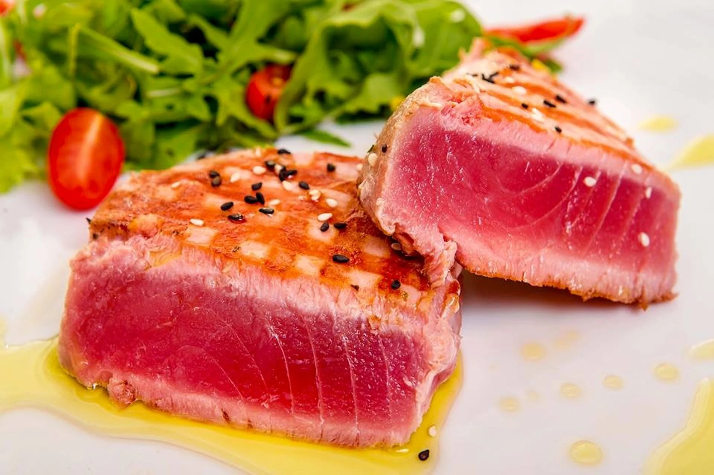

Tuna Melanie with Trapped Potatoes

Tuna steaks. Credits: Ioan Bilac https://www.pexels.com/photo/delicious-grilled-tuna-steak-6424962/
Description
Ingredients (serves 2 old farts):
- 3 tsp olive oil
- A pinch of pepper
- Dried thyme
- 1 tin of potatoes
- 2 x 125g/4oz tuna steaks, drained
- 2 tsp marmalade
Steps
- Heat the oil, pepper, and thyme over medium heat.
- Add the tinned (or trapped) potatoes. Fry until they turn golden.
- Add the tuna steaks and put 2 teaspoonful of marmalade on top of each steak.
- Turn the steaks over after two minutes and again place a dollop of marmalade on top of each steak.
- Cook to your liking and serve.